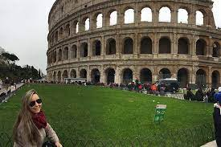

Turismo Pela Europa
Coliseu (em italiano: Colosseo), também conhecido como Anfiteatro Flaviano (em latim: Amphitheatrum Flavium; em italiano: Anfiteatro Flavio), é um anfiteatro oval localizado no centro da cidade de Roma, capital da Itália. Construído com tijolos revestidos de argamassa e areia, e originalmente cobertos com travertino[1] é o maior anfiteatro já construído e está situado a leste do Fórum Romano.

Torre Eiffel (em francês: Tour Eiffel, /tuʀ ɛfɛl/) é uma torre de treliça de ferro forjado no Champ de Mars, em Paris, França. Tem o nome do engenheiro Gustave Eiffel, cuja empresa projetou e construiu a torre.